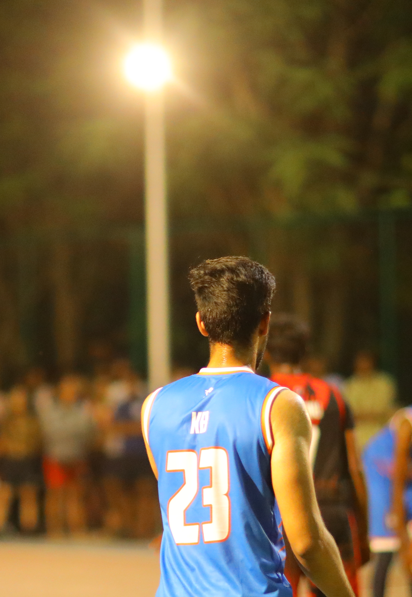

Kushal Banda
Experience
Product Journey
Education
Tech Stack
Core tooling I use to ship AI systems from prototype to production.
Writings & Publications
Insights, breakthroughs, and trends in artificial intelligence, helping you stay ahead in the fast-evolving world of AI.
Read on MediumGitHub Contributions
Thing About Me

Library
Get In Touch
kushalbanda265@gmail.comPomodoro Timer
A quick focus timer before you leave the page.
25:00